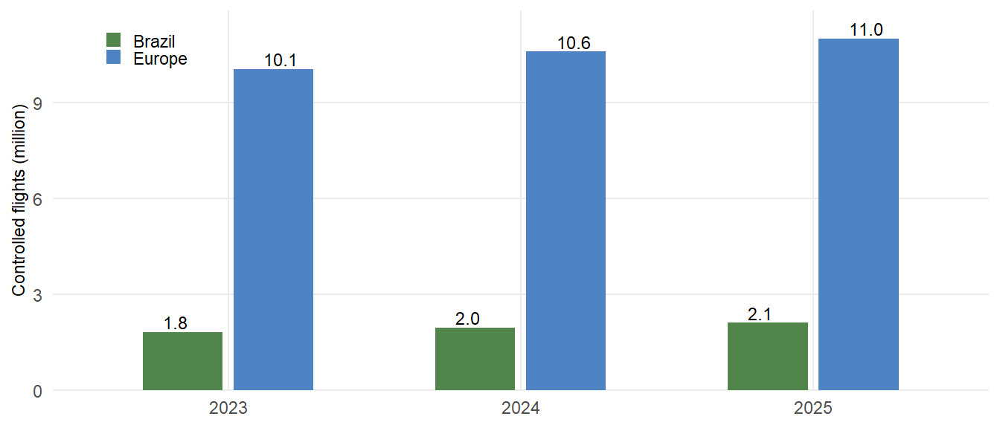
3 Traffic Characterisation
To facilitate operational benchmarking comparisons, it is crucial to have a good understanding of the level and composition of air traffic as the underlying demand and its evolution. This chapter presents air traffic characteristics for both regions, structured progressively from a network-level overview to an airport-level assessment covering traffic volumes, peak day demand, and fleet composition at the 12 study airports in each region.
3.1 Network Characterisation
To address the changes in air traffic and develop a better understanding of the nature of the air transportation network, this section characterises the network structure of both regions — progressing from overall traffic volumes to the distribution within each region, the flows connecting Brazil and Europe, and the broader international context.
3.1.1 Overall Traffic Volume
In 2025, Brazil handled approximately 2.1 million controlled flights, representing approximately 19% of the traffic serviced in Europe over the same period. Overflights account for a small share of the total air traffic momvements in both regions. As shown in Figure 3.1, both regions recorded growth over the 2023–2025 period, though the underlying dynamics differ significantly.
Brazil continued to expand its aviation sector, with traffic growing consistently across the three years — a trajectory that reflects sustained organic demand rather than cyclical fluctuation. In Europe, traffic levels also grew over this period, though at a more moderate pace, with the network continuing to consolidate and recover from the COVID decline and ripple effects from the Russian war of aggression against Ukraine. The different pace of growth across both regions reinforces the importance of understanding each system’s structural context when comparing operational performance.
Figure 3.2 shows the 7-day rolling average of daily movements in Brazil and Europe from 2019 to 2025. In Brazil, traffic levels recovered swiftly from the sharp drop observed in 2020 and have continued to grow steadily since 2022, surpassing 2019 levels and maintaining a stable profile with only modest seasonal variation throughout the year. The Brazilian air transport market does not exhibit strong seasonal peaks, reflecting a demand pattern driven primarily by domestic and regional connectivity rather than leisure-driven flows. In the European region, the recovery trajectory is clearly visible — from the sharp collapse in 2020 through a gradual rebuilding of demand across 2021 and 2022, reaching and consolidating at 2019 levels by 2024 and 2025. Europe’s traffic pattern, however, remains characterised by strong seasonal variation, with a pronounced surge in demand during the summer months that stands in clear contrast to the more stable Brazilian profile. This seasonal asymmetry is an important structural feature to bear in mind when comparing operational performance indicators across both regions throughout this report.
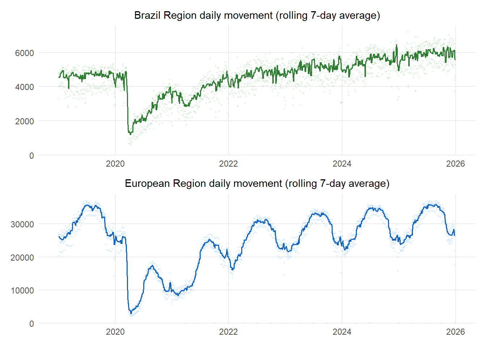
3.1.2 Traffic Distribution Within Each Region
While the total volume of traffic provides a first measure of the scale of operations in each region, it does not capture how that traffic is distributed across the network. Figure 3.3 presents the cumulative share of departures by airport rank for both regions in 2025. The distribution of air traffic in Brazil confirms that most flights are concentrated in a small number of airports. In 2025, the 10 busiest airports in Brazil handled 36% of all departing flights, whereas in Europe the top 10 airports account for 21% of all departures. The spread remains broadly constant up to the 50th rank, narrowing with the top 100 airports — marking 80% of all departures in Brazil and 74% in Europe. This reflects the historical development of the European network, where the traditional focus on national hubs resulted in a higher number of major national aerodromes interconnecting across the continent.
Figure 3.4 shows the distribution of domestic/regional and international departures in 2025. In both regions, the share of flights operating externally accounts for 14% of total traffic in Brazil and 20% in Europe. The majority of flights operate within each region, accounting broadly for about -/+ 80%. This domestic dominance is particularly pronounced in Brazil, where the continental scale of the country sustains a large volume of intra-national movements. In Europe, the relatively short distances between states mean that many flights classified as international are functionally comparable to domestic short-haul routes in Brazil. Accordingly, in this report, intra-European air traffic is considered “regional” traffic, equivalent to domestic traffic in other regions or large national airspace and air navigation systems.
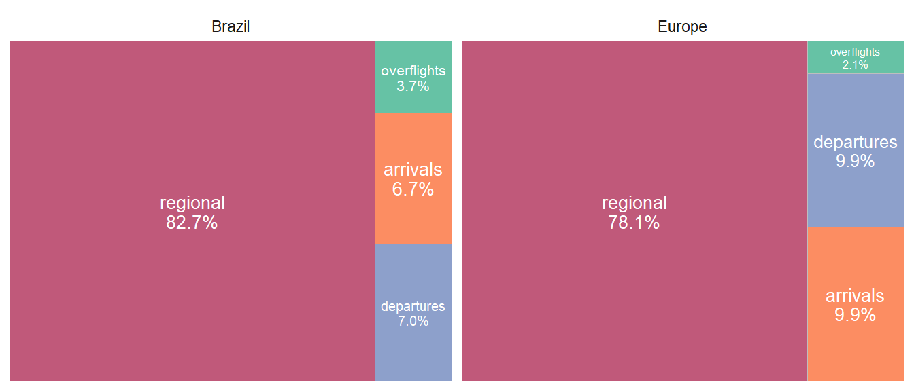
3.1.3 Flows Between Brazil and Europe
Figure 3.5 shows the change in rank among the main Europe-to-Brazil connections. The strongest connection shifted from Lisbon-Guarulhos (LPPT-SBGR) in 2024 to Madrid-Guarulhos (LEMD-SBGR) in 2025.
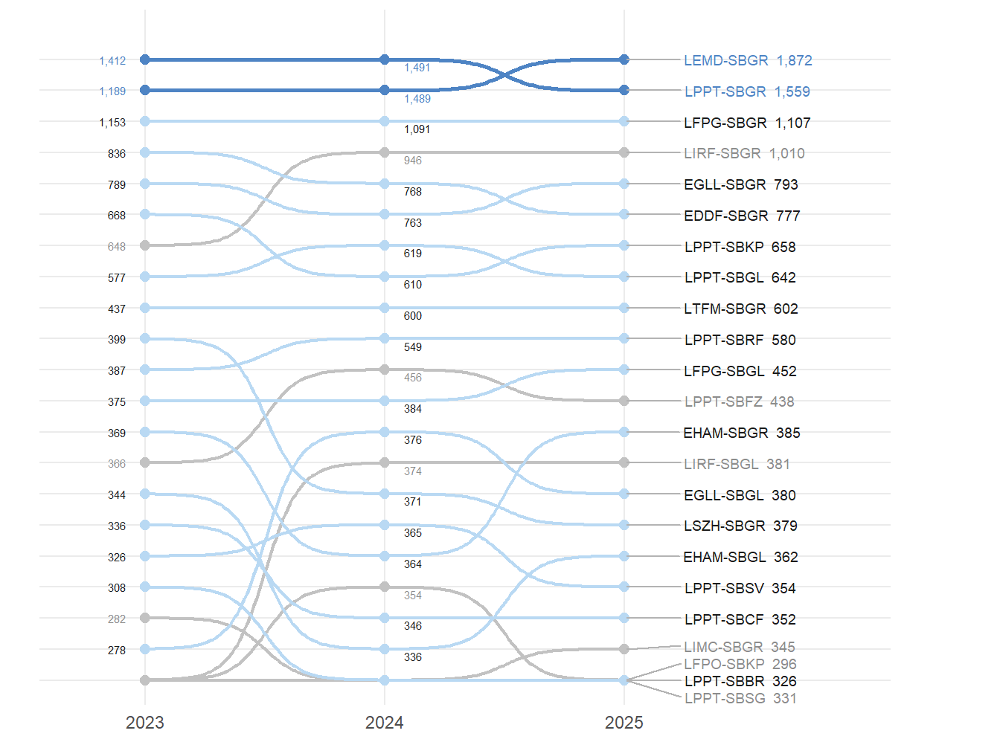
Figure 3.6 shows the connections from Europe to Brazil in 2025. Individual non-study airport connections with fewer than 90 flights per year are aggregated into an “other” group. Traffic from Brazil to Europe accounts for 0.9% of the total departures from Brazilian airports.
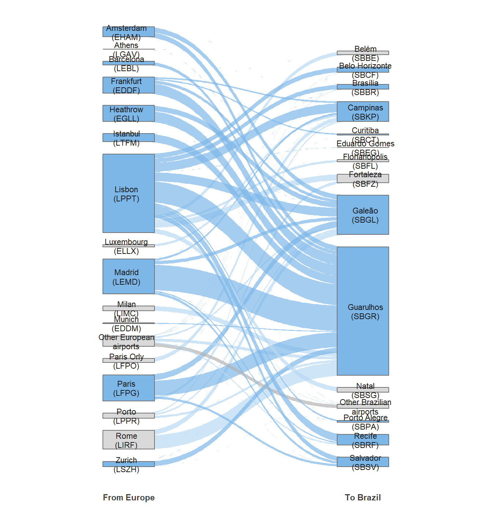
Guarulhos (SBGR) and Madrid (LEMD) are the main airports sustaining connectivity between both regions, reflecting the historically close ties between Brazil and Europe. In this edition, Madrid emerges as the leading European hub in terms of flight operations to Brazil, while Lisbon (LPPT) continues to play a significant role as a gateway between the two regions.
3.1.4 Connections to Other World Regions
From a broader international perspective, both regions are interconnected with the rest of the world in distinct ways. Figure 3.7 shows the spread of international traffic from each region. For Brazil, connections to other South American states represent the major international destinations. For Europe, the Middle East, North America, and Africa represent the largest international markets. The chart aligns Brazil-to-Europe and Europe-to-Brazil traffic on a common counterpart-region row to support comparison. Connections to other regions or below a certain limit of regular flights are not presented. The potential impact of such connections will be further analysed in future editions.
Figure 3.8 provides a closer look at the main country-level external connections. For Brazil, the focus remains on South America, with just under 45.000 flights operated to adjacent countries in 2025. Argentina and Chile together account for approximately half of these movements, confirming the strength of the southern cone corridor. For Europe, the comparison shows the main external country destinations across North America, the Middle East, Africa, and Asia/Pacific, balancing the number of displayed bars with the Brazilian panel.
3.2 Airport Level Air Traffic Movements
The previous section characterised the air traffic network at a macro level. As airports represent nodes in this overall network, changes to the overall traffic situation ripple down to the airport level. At this level, performance is measured in terms of airport movements — that is, the combined count of arrivals and departures handled at each location. This demand on airport form a substantial input to understand how the operational performance measures in this report developed over time. With this report the analysis is extended to performance levels observed at 12 key airports in each region.
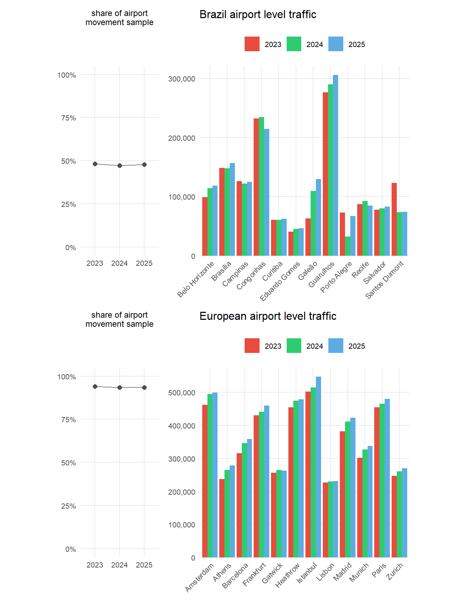
3.2.1 Movement Evolution at Study Airports
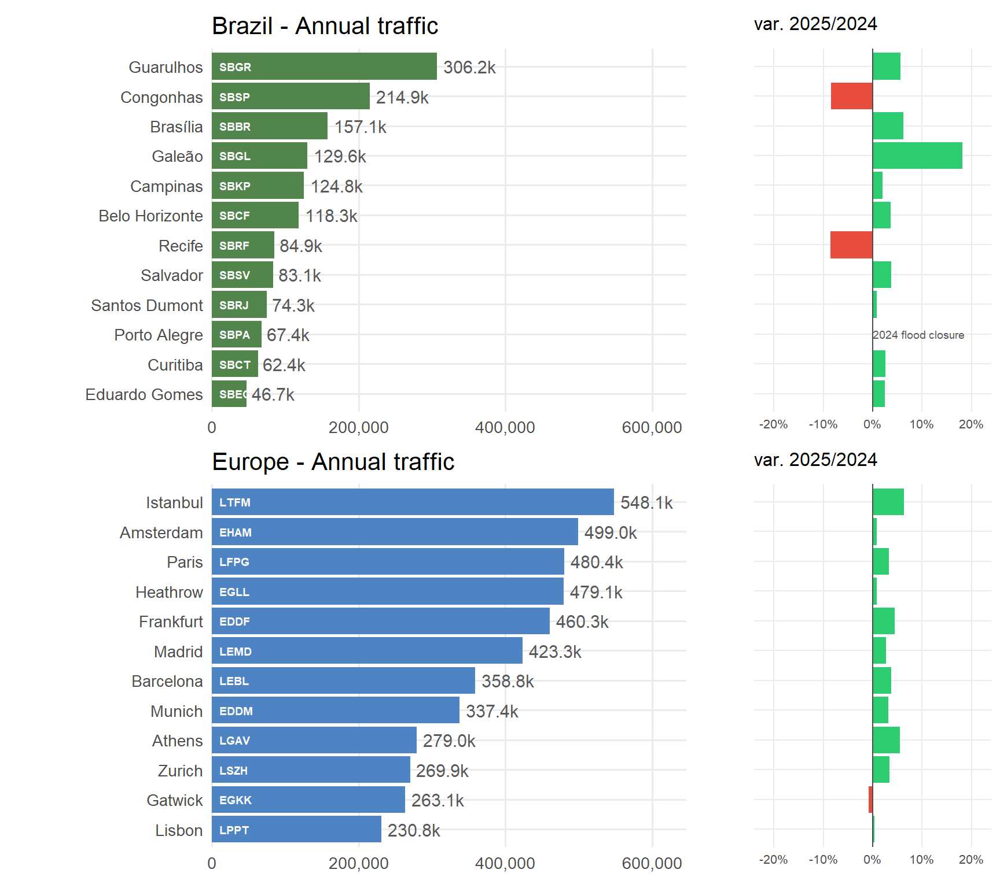
Figure 3.10 presents the airport movement evolution for the study airports from 2024 to 2025. In Europe, airports have generally observed increases in movement levels across the period, reflecting a network in a phase of gradual consolidation. The Brazilian scenario is more heterogeneous — while some airports such as Galeão (SBGL) and Guarulhos (SBGR) registered increases, others such as Congonhas (SBSP) and Recife (SBRF) saw declines in 2025. Meanwhile, Santos Dumont (SBRJ) showed very little variation overall. This divergence highlights the uneven pace of growth among Brazil’s major airports, reflecting broader structural and operational differences in the national aviation landscape.
It is also important to emphasise that Brazil’s movements are distributed across a much larger number of airports compared to Europe. As discussed in Section 3.1, Brazil’s extensive network dilutes movement concentration at the top airports, suggesting a modest redistribution across a broader set of airports — potentially due to regional market dynamics, strategic airline adjustments, or temporary infrastructure constraints. Europe’s busiest airports have slightly increased their share of total network movements, reflecting the growing reliance on major hubs across the region.
3.2.2 Monthly Movement Patterns
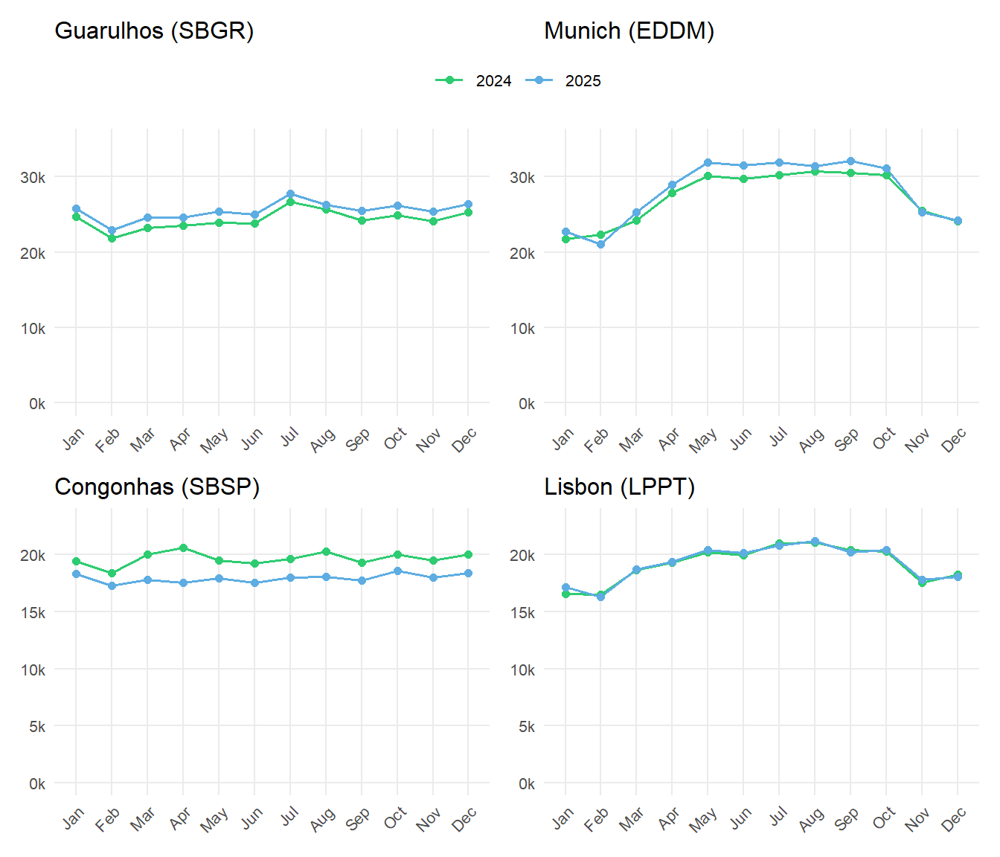
Figure 3.11 shows the monthly evolution of movements at Guarulhos (SBGR) and Munich (EDDM), as well as at São Paulo Congonhas (SBSP) and Lisbon (LPPT). These airport pairs were selected to illustrate the contrasting movement profiles between the two regions at comparable levels of network importance. For SBGR, a steady increase in monthly movements is visible in 2025 compared to 2024, with July standing out as the month with the highest volume. Operations at EDDM show a more pronounced seasonal pattern, with movements building up from late spring to peak levels during the summer months. This contrast reinforces the structural difference between Brazil’s more stable year-round demand and Europe’s tourism-driven seasonality. Comparing SBSP and LPPT shows a similar dynamic at a smaller scale. Movement levels at SBSP are moderate and stable throughout the year, servicing predominantly national and regional traffic. Lisbon, in turn, exhibits a clear summer peak in movements, consistent with its role as a major gateway for leisure and connecting traffic between Europe and the Atlantic region.
3.3 Peak Day Traffic
While the annual traffic provides insights in the total air traffic volume and the associated demand, it does not provide insights on the upper bound of achievable daily movement numbers. The latter depends on demand, operational procedures and/or associated constraints, and the use of the runway system infrastructure. The peak day traffic is determined as the 99th percentile of the total number of daily movements (arrivals and departures). The measure represents thus an upper bound for comparison purposes.
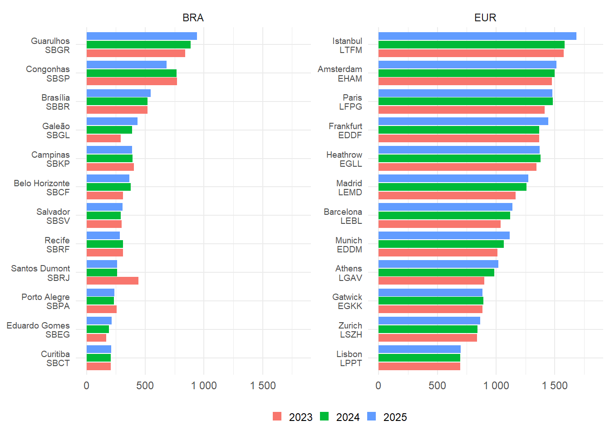
Figure 3.12 shows the evolution of peak day traffic between 2023 and 2025 across the Brazilian and European airports included in this study. The peak day measurement is as a useful complement to traffic levels and average daily movement metrics. It provides a reference to the achievable daily service rate that can highlight nuances of the operational context and constraints at comparable airports and approach areas.
Overall, the data shows a more differentiated development of operational volumes across the Brazilian study airports. On the European side, the year-by-year comparison highlights the on-going recovery and first consolidation effects post the pandemic. Consistent with the overall traffic increase, most European airports recorded an increase in peak day traffic between 2024 and 2025, while a number of the largest airports show only marginal changes that point to daily service rates already close to their current upper operating range.
Still, some variations stand out on the Brazilian side:
Guarulhos (SBGR), Galeão (SBGL), and Brasília (SBBR) recorded increases in their peak day movements, reflecting their greater capacity to absorb traffic and some redistribution of demand within the national network.
Congonhas (SBSP), on the other hand, shows a notable drop in 2025, while Santos Dumont (SBRJ) remains well below its 2023 peak day value following the operational restrictions implemented during 2024, which limited its capacity and led to the transfer of some flights to SBGL.
In the case of Porto Alegre (SBPA), even though it was severely affected by floods starting in May 2024, the data shows only a limited recovery in its 2025 peak day value and remains below the level observed in 2023.
Regarding the peak day traffic at European airports:
Istanbul (LTFM) shows the highest peak day traffic among the European study airports in 2025 and continues to increase compared to the previous years.
Significant increases are observed at Frankfurt (EDDF), Munich (EDDM), Athens (LGAV), Barcelona (LEBL), and Madrid (LEMD) over the 2023 to 2025 period. As major gateways, this also reflects the increase in international air traffic and the continued strengthening of network connections by the major carriers operating from/to these airports.
Marginal to no changes between 2024 and 2025 evidence that the peak operations at Paris Charles de Gaulle (LFPG), London Heathrow (EGLL), Amsterdam (EHAM), and Lisbon (LPPT) reach their daily maximum service rate.
The comparison between the Brazilian and European contexts reinforces the importance of considering each network’s structure, operational model, and geographic distribution when evaluating operational performance at and around airports. It also shows how peak day traffic can offer unique insights — especially during periods of recovery or transition — by highlighting the maximum operational load airport services can sustain regardless of their average daily traffic.
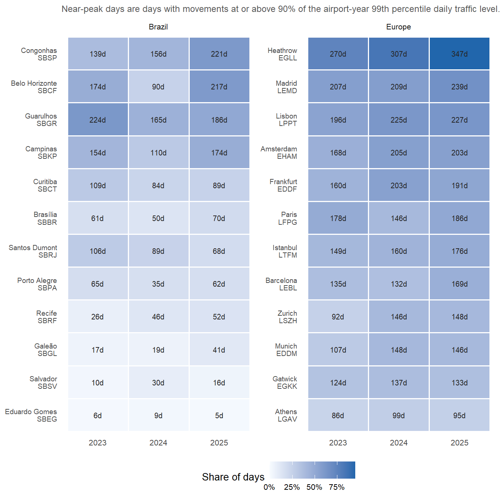
Figure 3.13 complements the peak-day comparison by showing whether high-demand days occur repeatedly during the year or only as isolated events. For each airport and year, the reference level is calculated from that airport-year’s own 99th percentile of daily movements. This keeps the measure focused on the shape of demand within each year, rather than on absolute size differences between airports.
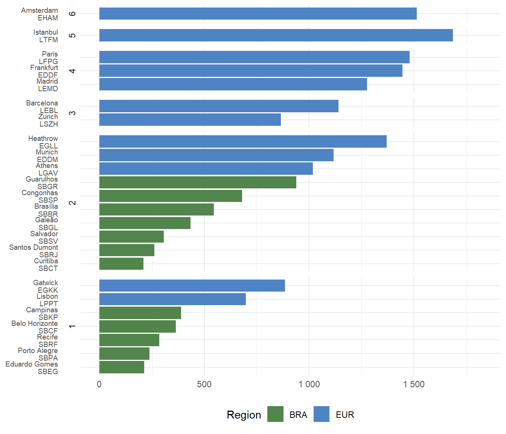
Analysing the 2025 peak day data, as presented in Figure 3.14, with Brazilian and European airports grouped by number of runways, we observe that seven European airports operate with three or more runways and are therefore not directly comparable to Brazilian airports. However, it is important to note that in many of these cases, the runway system does not support fully independent operations on all available runways. Such constraints reduce the available runway system capacity, and thus, the serviced peak traffic is also impacted by the runway system configuration. For example, operations at Amsterdam (EHAM) cannot make use of all six runways at the same time. Operations at Zurich (LSZH, 3 interdependent runway system) range above the order of single runway operations at Lisbon (LPPT, 1 runway). As a result, peak traffic performance is also shaped by the specific runway system configuration.
When focusing on airports with up to two runways, European airports still generally show higher peak day movements compared to the Brazilian ones. This difference can be attributed to more robust infrastructure and operational systems in Europe. Additional benefits are exploited by dedicated operational concepts. For example, London Heathrow implemented time-based separation on final which adds to achieving a high level of runway system throughput even in high wind situations.
This shows the importance of analysing peak day traffic as a complementary indicator to average daily movements, especially during periods of recovery or operational adjustments. Future research may highlight the impact of the runway system configuration on the service rate under the associated runway use.
3.4 Fleet Mix
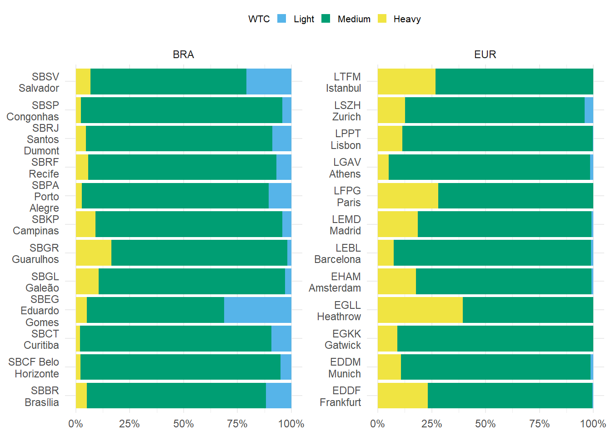
Figure 3.15 confirms the dominance of the “medium” aircraft category at the airports analysed in both Brazil and Europe. Fleet mix plays a key role in airport capacity, directly impacting traffic flow and operational efficiency. Generally, a higher share of “heavy” aircraft can reduce runway throughput due to wake turbulence separation requirements and longer landing and take-off times.
In Brazil, the main international hubs, Guarulhos (SBGR), Galeão (SBGL), and Campinas (SBKP), show the highest share of “heavy” aircraft among the Brazilian study airports, reinforcing their role as the country’s key international gateways. Guarulhos remains the strongest Brazilian heavy-aircraft profile, while Galeão and Campinas continue to combine international, domestic, and cargo-related operations, contributing to a more diverse fleet profile and operational complexity.
Some Brazilian airports such as Brasília (SBBR) and Salvador (SBSV) serviced a significant share of “light” aircraft. This category that is nearly absent among the European airports analysed. The notable exemption is Zurich (LSZH). In Salvador, light aircraft account for about one fifth of all movements, while the share is even higher at Eduardo Gomes (SBEG), reflecting the specific regional and logistical roles of these airports.
On average, the share of “heavy” aircraft remains higher at the European study airports. The major European hubs like Heathrow (EGLL), Charles de Gaulle (LFPG), Istanbul (LTFM), and Frankfurt (EDDF) operate with a higher proportion of “heavy” aircraft, in line with their function as global connection points. These structural differences reflect how each region organizes its connectivity: Brazil tends to centralize long-haul operations in a few key airports. The European network evidences the national focus on air transport development. With a significant higher number across a broader set of hubs traditionally servicing the national capitals.
Based on continuous monitoring throughout the year, this pattern has proven to be remarkably stable. The distribution of aircraft categories has remained consistent even during periods of disruption, such as extreme weather or localized infrastructure constraints. These observations suggest that the fleet mix at the analysed airports is shaped more by long-term structural factors than by short-term fluctuations, as airspace users operate and renew their fleet servicing these airports within their economic and operational context.
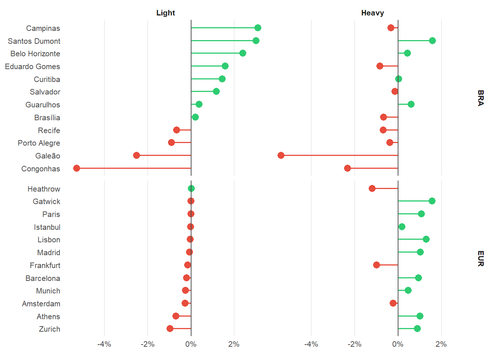
Figure 3.16 provides a complementary view of this structural difference by focusing on the two categories that create the clearest contrast between the regions. Between 2023 and 2025, the European airports remain clustered along a high-heavy, very-low-light profile, with Heathrow (EGLL), Paris Charles de Gaulle (LFPG), Frankfurt (EDDF), Istanbul (LTFM), and Madrid (LEMD) maintaining the strongest heavy-aircraft component. In Brazil, the spread is wider: Guarulhos (SBGR), Galeão (SBGL), and Campinas (SBKP) continue to anchor the heavier end of the Brazilian group, while Eduardo Gomes (SBEG), Salvador (SBSV), Brasília (SBBR), Porto Alegre (SBPA), and Curitiba (SBCT) retain a visibly higher light-aircraft component. The 2023 to 2025 movement therefore reinforces the interpretation that the difference is structural rather than a temporary annual fluctuation, even as local changes are visible at airports affected by network adjustments and demand recovery.
3.5 Summary
This chapter provided a comprehensive overview of air traffic dynamics across Brazil and Europe, covering both network-wide and airport-level perspectives.
The data confirms that Brazilian air traffic has surpassed pre-pandemic levels, reflecting a phase of real growth, while Europe continues a gradual recovery, marked by strong seasonal peaks and a more fragmented network structure. If current trends persist, Europe is expected to return to pre-pandemic traffic levels by 2025/2026, particularly driven by robust summer activity and the continued normalisation of regional and international demand. Despite these differences, both regions show signs of stability and resilience, even when affected by disruptions such as extreme weather or regulatory adjustments. Events like the prolonged closure of Porto Alegre (SBPA) and restrictions at Santos Dumont (SBRJ) highlighted the sensitivity of localized operations and the capacity of the network to adapt.
At the airport level, Brazilian traffic remains highly concentrated in a few major hubs, whereas European operations are more spread across several national gateways. This reflects the historical evolution of the European network with a high number of national hubs across its member countries. At the same time, the pattern shows a tremendous growth opportunity for Brazil as continual growth can serve as a motor for higher levels of interconnectivity. While the Brazilian system shows a steady “all-year” demand pattern, there is a pronounced seasonal pattern in Europe typically culminating during the summer holiday season.
The peak day analysis complemented the annual view by illustrating the operational limits reached under maximum demand. Although volumes remained stable overall, individual airports showed notable variations—either from growth, as in SBGL and SBCF, or contraction, as seen in SBRJ. European peak service rates show the overall recovery pattern and first signs of reaching the available capacity for the major hubs.
Finally, the fleet mix analysis reinforced the structural differences in how each region operates: Brazil shows a higher presence of light aircraft in some regional airports and a centralised model for long-haul traffic. Light-type traffic at the study airports in Europe remain the exemption and are typically routed to nearby smaller regional airports. A higher share of heavy aircraft is observed at the top-European airport in this study. This roots as well in the historical evolution with many European states operating their own flag carriers and global connections. The wider spread of international connections across all chosen airports shows a less centralised global connectivity model.
Together, these findings establish a base to understanding the operational performance indicators in the next chapters.